1. Nameščanje OS v VirtualBox
Za to predstavitev vam bom pokazal kako namestiti operacijski sistem Linux Ubuntu na virtualno mašino.
1.1 Nameščanje VirtualBox-a na računalnik
Za namestitev VirtualBox-a moramo najprej obiskati spletno mesto VirtualBox in si prenesti najnovejšo različico za vaš operacijski sistem.
Ko si prenesemo VirtualBox zaženemo VirtualBox.exe.
Po zagonu VirtualBox.exe se vam odpre namestitveni čarovnik.
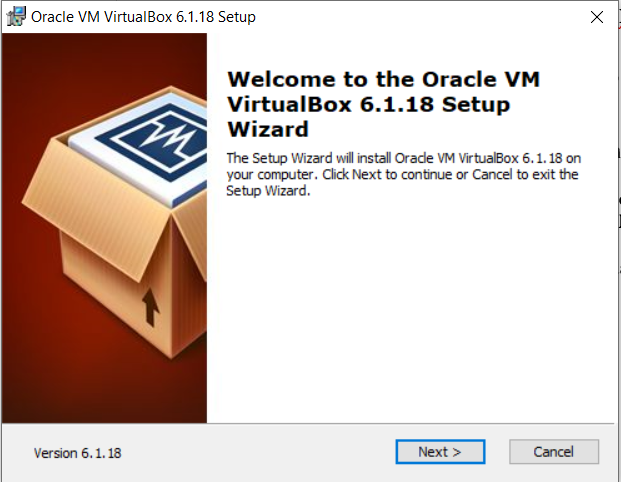Pritisnite »next« in izberite mesto na katero se vam bo naložil VirtualBox.
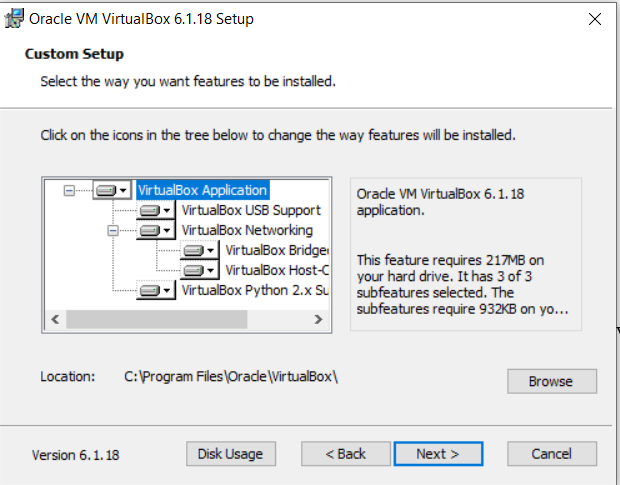Pritisnite »next«, odprlo se vam bo novo okno tukaj pustite vse tako kot je bilo. Nato pritisnite »next« in nato »Finish«. Ko se vam program naloži ga zaženite.
1.2 Nameščanje .iso datoteke
Če želimo naložiti operacijski sistem bomo rabili iso sliko operacijskega sistema. V mojem primeru je to Linux Ubuntu. Odidemo na spletno stran od Ubuntu-ja in gremo pod zavihek »download« Izberemo katero različico ubunutaja bomo naložili in kliknemo »download«
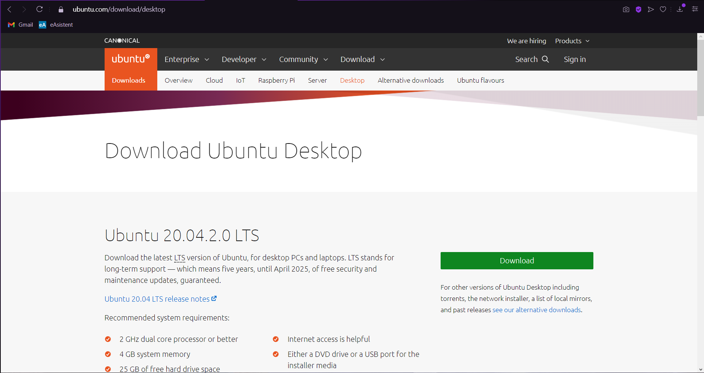2. Priprava prostora za nameščanje OS v Virtual Box
Ko odpremo VirtualBox se nam prikaže začetno okno. Iz začetnega okna lahko uvažamo, izvažamo, dodajamo ali ustvarjamo nove operacijske sisteme. Pod zavihkom »Prefrences « lahko spreminjamo različne nastavitve, a za naš operacijski sistem ne potrebujemo spreminjati nobenih nastavitev.
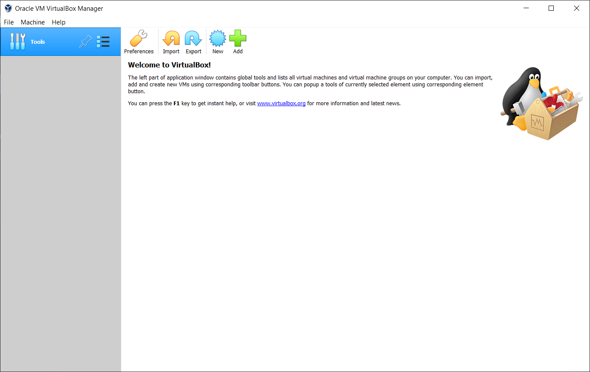2.1 Določanje imena
Za nameščanje novega operacijskega sistema pritisnemo »New« v začetnem oknu. Odprlo se vam bo novo okno, tukaj določite ime vašemu projektu, izberite lokacijo kamor se vam bo projekt shranil, na koncu pa izberite še vrsto in različico operacijskega sistema katerega želite namestit.
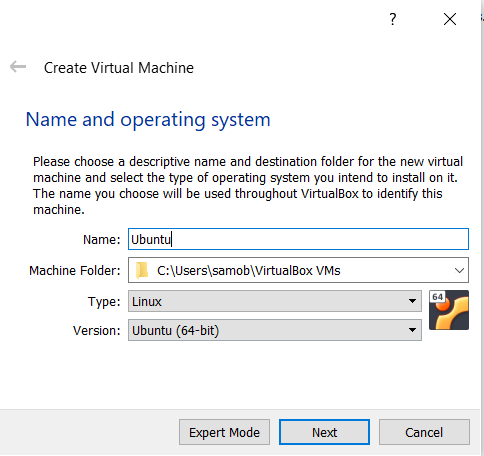2.2 Določanje RAM-a
Na novem oknu določimo koliko vašega pomnilnika(RAM) želite nameniti operacijskemu sistemu. Če ima vaš računalnik 8 GB RAM-a potem vam svetujem da virtualni mašini namenite 2 GB RAM-a. Količino RAM-a pa lahko vedno spremenimo kasneje v nastavitvah.
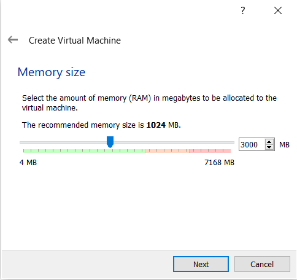2.3 Določanje način shranjevanja
Na naslednji strani lahko izberemo kako bomo shranjevali podatke. Lahko jih shranjujemo direktno na disk našega računalnika, kar osebno odsvetujem, ker v primeru, da si naložite kakršno koli zlonamerno programsko opremo se vam lahko razširi po celem disku. Osebno priporočam ustvarjanje virtualnega diska, saj v primeru, da naložite kakršno koli zlonamerno programsko opremo lahko samo izbrišete virtualni disk in s tem izbrišete tudi zlonamerno programsko.

Na naslednjem oknu moramo izbrati v kakšnem formatu bomo shranjevali podatke. VDI ali Virtual Disk Image je osnovni format za VirtualBox, VHD ali Virtual Hard Disk je format, ki je ustvarjen za Microsoftove virtualizacijske produkte. Format VMDK ali Virtual Machine Disk je format narejen specifično za VMware programe. V našem primeru bomo uporabljali format VDI.
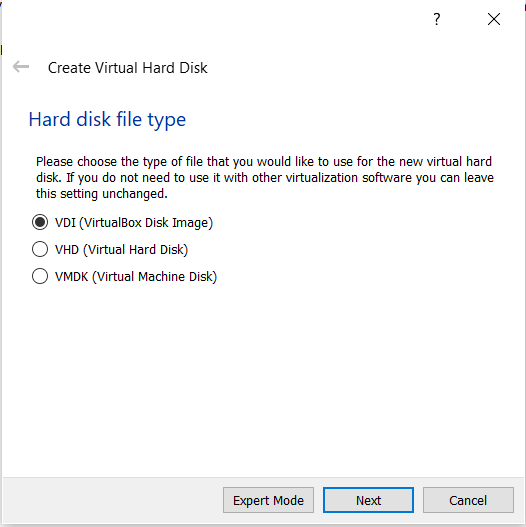Zdaj moramo izbrati ali bo naš disk dinamično dodeljen ali bo fiksne velikosti. Dinamično dodeljen se lahko razširi in zavzame več prostora če je to potrebno. Disk fiksne velikosti pa zavzame samo toliko prostora kot mu je dodeljeno. Za naše potrebe bomo izbrali dinamično dodeljen disk v primeru da bomo kdaj rabili več prostora.
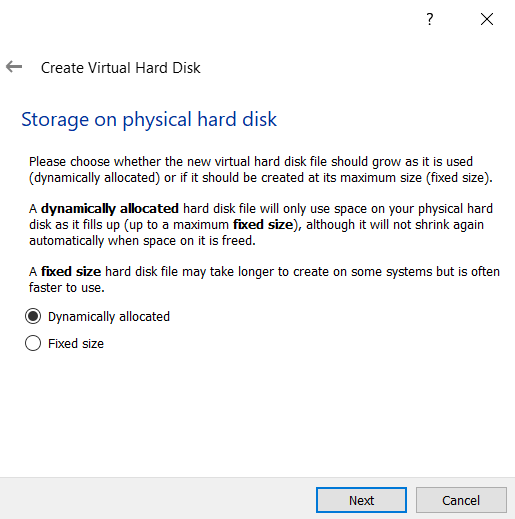2.3 Določanje velikosti diska
Zdaj bomo določili koliko prostora bomo dodelili našemu virtualnemu operacijskemu sistemu. V mojem primeru bo to 10 GB. Vi pa namenite kolikor želite.
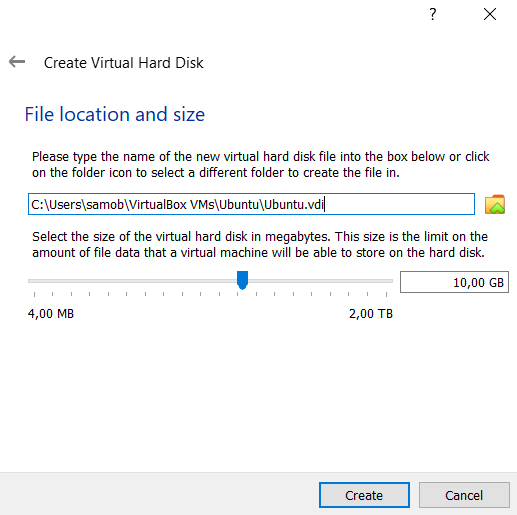Zdaj smo pripravili prostor v katerega lahko naložimo operacijski sistem. Zdaj bomo morali dodati .iso sliko operacijskega sistema v prostor, ki smo ga pripravili.
3. Nameščanje OS v VirtualBox
Postavimo se v okno z našim projektom in pritisnemo »Settings«.
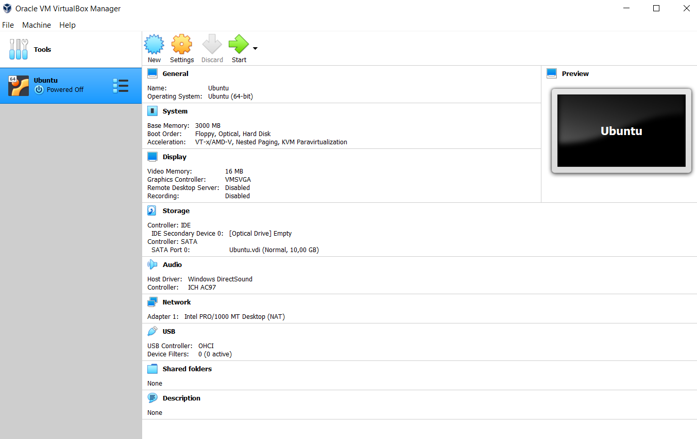Tukaj kliknemo »Storage« in pod »Controller: IDE« kliknemo »Empty« nato ob strani kliknemo ikono DVD-ja.
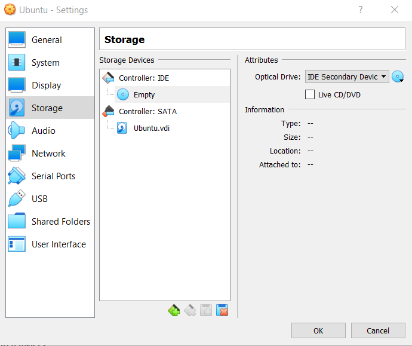Tam kliknite »choose a disk file« in poiščite kam ste shranili .iso datoteko. Ko ste dodali .iso datoteko ste namestili vaš OS. Seveda pa morate po zagonu nastaviti OS.